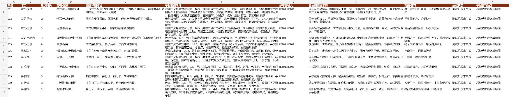

大纲细化
把故事拆成镜号、场次、景别、画面描述、单帧图提示词、图生视频提示词和对白音效。
ComfyUI + Yunwu/Gemini + Excel
这是一个公开教学仓库：从故事拆分、参考图策略、ComfyUI 节点编排、批量生图，到最终把 S01-S20 成品图按镜号贴回 Excel。

Repository Name
One-click ComfyUI workflow kit for turning story outlines into shot-list Excel files, Yunwu/Gemini still-image generation, and image-filled storyboards.
Pipeline
这套流程把“创作判断”和“机械执行”分开：先用结构化脚本确定镜头，再让 ComfyUI 稳定批量执行。
把故事拆成镜号、场次、景别、画面描述、单帧图提示词、图生视频提示词和对白音效。
先生成主角、场景、关键道具和随身物品，后续镜头统一引用，减少角色和空间漂移。
每个镜头一个 Yunwu Gemini Image Generate/Edit 节点，参考图自动接入 image_1、image_2 等输入口。
脚本把 workflow 转成 ComfyUI API prompt，自动排队，节点内置重试，适合长流程生成。
SaveImage 输出前缀使用 REF01、S01、S02 等命名，方便回收、排序和后续图生视频。
脚本读取 ComfyUI output 目录，把最新的 S01-S20 图片嵌入“分镜脚本”的单帧图粘贴区。
Example Output
下方图片来自同一个短片案例《你丢了一把钥匙》，已压缩为网页缩略图。
Install
仓库内包含 `comfyui_yunwu_image_nodes`，直接复制到 ComfyUI 的 `custom_nodes` 目录即可。复制后必须重启 ComfyUI。
Copy-Item -Recurse `
.\custom_nodes\comfyui_yunwu_image_nodes `
F:\ComfyUI\ComfyUI-aki-v2\ComfyUI\custom_nodes\
# Restart ComfyUI after copying the node.Runbook
下面是完整的本地运行顺序。示例默认 ComfyUI 地址为 `http://127.0.0.1:8188`。
pip install -r requirements.txtpython .\scripts\build_storyboard_assets.py `
--story .\data\phone-key-story.json `
--out .\build$env:YUNWU_API_KEY="sk-your-key-here"python .\scripts\queue_comfyui_workflow.py `
--workflow .\build\phone_key_story_yunwu_template.json `
--comfy http://127.0.0.1:8188python .\scripts\embed_outputs_to_excel.py `
--workbook .\build\phone_key_storyboard.xlsx `
--images F:\ComfyUI\ComfyUI-aki-v2\ComfyUI\output\phone_key_story `
--out .\build\phone_key_storyboard_with_images.xlsxRecommended Node Settings